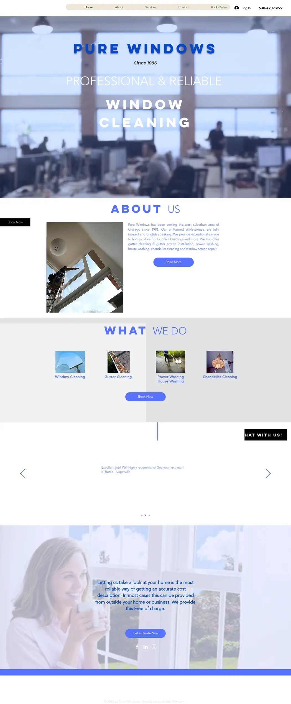
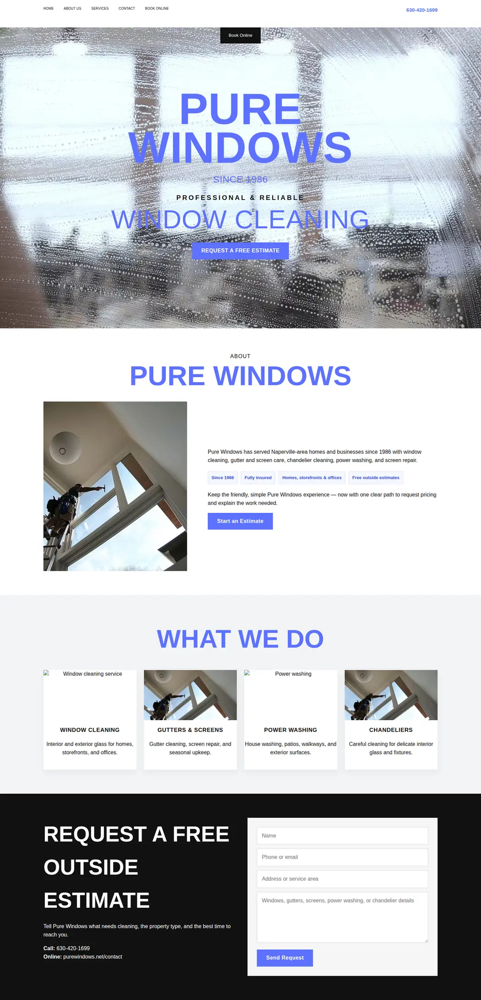
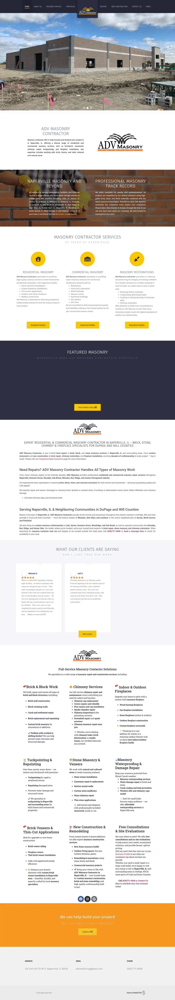
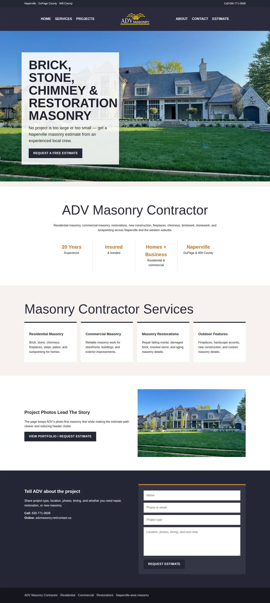
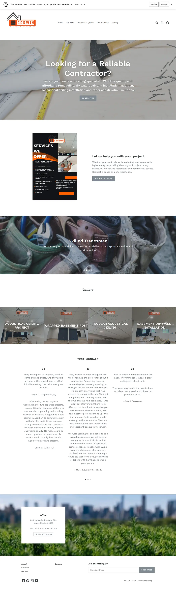
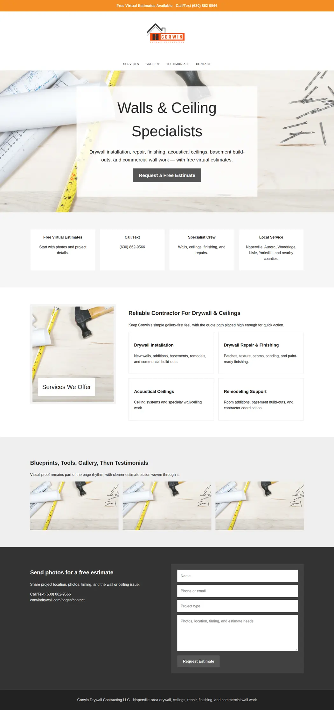
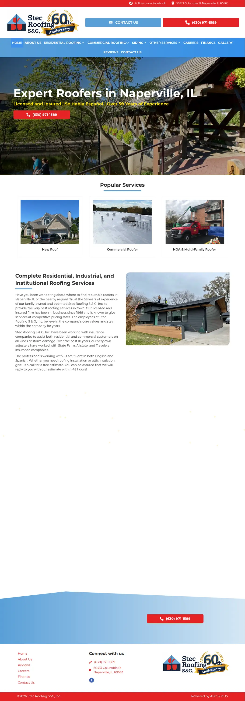
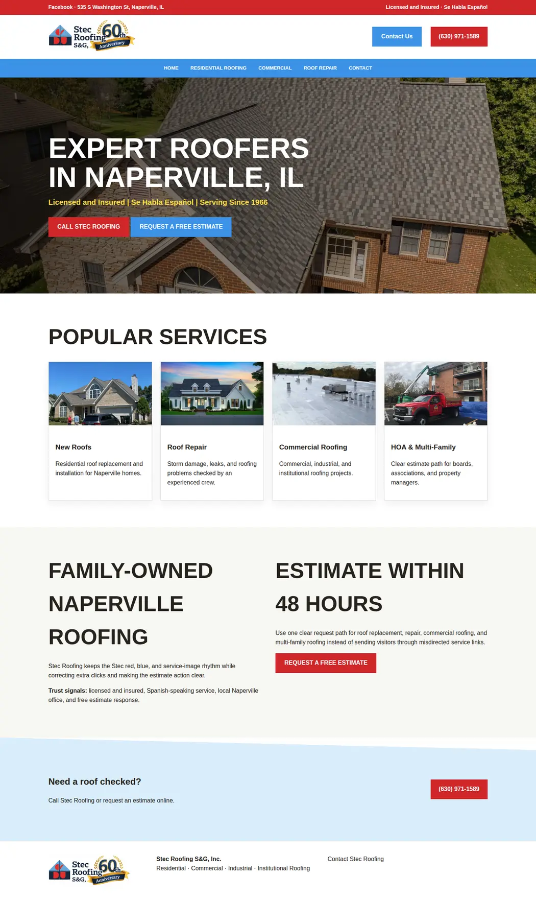
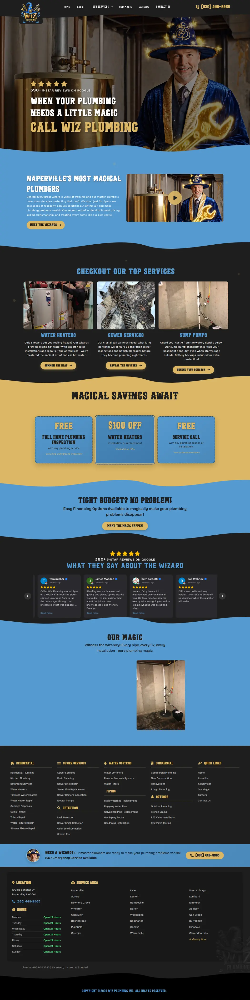
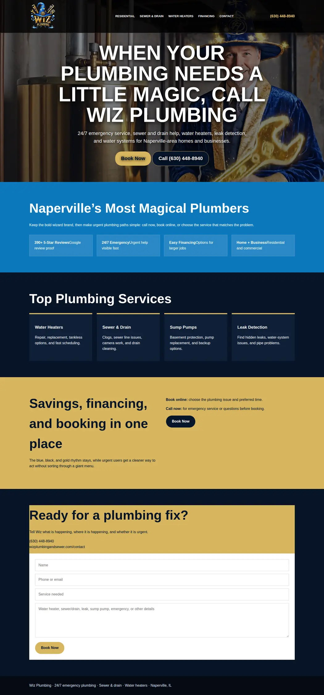

Page Profit Check
Existing leads only. Reviewer sub-agents identified structural-cue failures first; parent repaired prototypes, recaptured screenshots, and packaged this lightweight side-by-side report.









